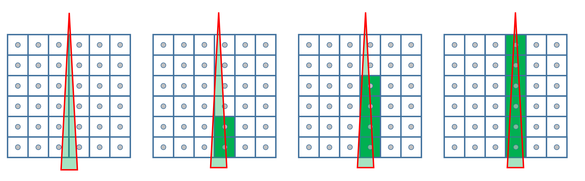
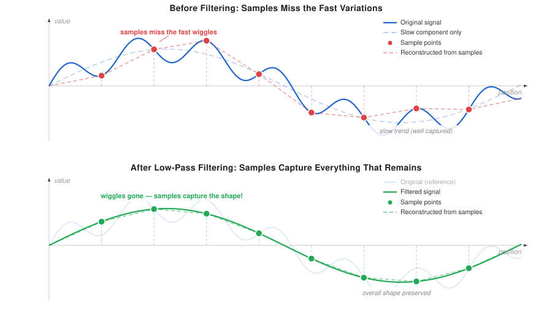

Page 4: Aliasing
On this page, we’ll try to understand the fundamental problem of discrete representations in a simplified way. When you learn about these ideas in a signal processing class, they usually jump right to fancy math (which is quite elegant, once you understand it). I am going to try to explain it in purely graphics terms first.
An advantage of this approach is that we can provide effective demos to illustrate the problems.
A Problem with the point sample model
We defined pixels as point samples. They measure the color at a specific point. That means that we can easily have triangles that are too small and fit “in between” the pixels.
Here is an example using three.js. The picture on the left has a bunch of yellow and orange triangles. The orange triangles are positioned so that they cover a pixel. The yellow triangles aren’t so lucky.
In the middle is the same picture enlarged. The pixels in the left image are dots. You can see the yellow triangles hiding between them. On the right is a “zoom” on the left image - we’ve made it bigger (by replicating the same pixels 5 times). This makes it easier to see what is happening.
Yes, we really can lose triangles between the pixels.
Problems in motion
In this demo, we make the triangles move. Sometimes, they get lucky and cover a pixel. Sometimes, they are hiding between pixels. This causes them to flash. Because the motion is very regular (constant straight line), the pattern is simple.
Not just tiny triangles
We can have a big triangle and still have problems. Here is a tall skinny triangle: the bottom of it is effectively a triangle that is too small.
Notice how the left to right motion of the triangle (clear in the middle view) causes a very visible “crawling” in a different direction (top to bottom).
Here is a schematic of what is happening:
{kind=link}

The left to right motion of the triangle causes the sampled pixels to crawl upward.
This is dramatic when the triangle vanishes, but you could imagine this being the edge of a bigger object.
Even the checkerboard
Even the checkerboard sampling problem can be viewed this way. Here, we made the checkerboard from triangles. The checkerboard is half a pixel grid. It is slowly moving to the right. Sometimes the pixel centers fall on blue, sometimes on orange.
What can we do about this?
Having seen the problems, you might ask: can we fix aliasing? Can we clean up those jagged edges and flickering textures after the fact?
The answer is no. Aliasing is a fundamental consequence of discretization. Once you’ve taken the samples, the information is gone — you can’t tell which of the many aliased possibilities was the original.
What we can do is lower our expectations and then meet them reliably. Instead of trying to capture everything (which is impossible), we accept that we’ll lose some detail, and we make sure we lose it consistently and predictably rather than in the ugly, unpredictable way that raw aliasing produces.
Here’s a simplified way to think about it: the cause of our problems is small triangles. We simply cannot handle them predictably. Sometimes they show up, sometimes they don’t.
We could just disallow small triangles. We filter them out: we remove all triangles that are too small (and therefore likely to cause a problem when we sample them).
Notice that we must pre-filter: that is, we must get rid of potentially bad triangles before they cause problems.
This is the core insight of anti-aliasing: it prevents bad aliasing before it happens. It does not fix it afterward.
It also represents a sacrifice: by losing small triangles, we lose the ability to have small details. But, it means that what we can draw, we can draw reliably and predictably. This again is the key insight of anti-aliasing: we prevent bad problems by making sacrifices.
Beyond Small Triangles: Fast Changes
The “small triangles” story is oversimplified. Sometimes, the problems aren’t small triangles; and sometimes small triangles aren’t the problem.
The real issue isn’t just small objects — it is fast changes. Any place where the signal changes rapidly relative to the sample spacing is a potential aliasing problem.
A sharp edge is a fast change: over a very small distance in space, the color value jumps from one thing to another. A thin stripe has two fast changes close together. A high-frequency texture pattern is full of fast changes.
If things change slowly — gradual gradients, soft transitions — there is not much that can go wrong between sample points. The value at one sample is similar to the value at the next. But if things change quickly, anything could happen in between, and our samples will fail to capture it.
The pre-filter process needs to get rid of fast changes, which makes things look blurry.
This idea of fast changes is still an oversimplification. The real answer is that the problems are high frequencies. But explaining high-frequencies is best left to a formal signal processing class. And even then, understanding the math in multiple dimensions is hard. To try to capture a few weeks of Electrical Engineering in a paragraph:
In signal processing terms, fast changes correspond to high frequencies. The Fourier transform decomposes any signal into sine waves, and fast changes require high-frequency sine waves to represent them. Aliasing occurs when the signal contains frequencies above what the sampling rate can capture (the Nyquist limit). Anti-aliasing, in this framework, is a low-pass filter: we remove the high frequencies before sampling so that only slow changes remain.
{kind=link}

A 1D diagram showing a signal with both slow and fast variations, with sample points marked. Show how the slow parts are captured faithfully but the fast parts are missed or misrepresented. Then show the same signal after low-pass filtering: the slow parts look almost the same, but the fast parts have been smoothed away, and now the samples capture everything that remains. Image created by Claude to summarize a standard signal processing concept.
The magic here is that by ensuring that we have pre-filtered (so there are no wiggles, or fast changes), then we know that we can interpret the samples in a simple way.
Here’s yet another way to think about it: Suppose I give you a bunch of samples and ask you to guess what the original signal was. You could guess anything. But, if I promise you “the signal has no wiggles between the samples,” you know what the correct reconstruction is. I just need to remove any of the extra wiggles before I take the samples.
Summary
The problems of aliasing are real and create visual artifacts that we want to avoid in graphics.
Next: Page 5 - Anti Aliasing